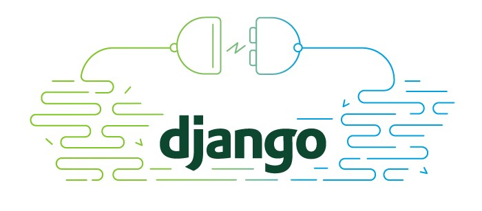

{% extends "base.html" %}
{# Load the tag library #}
{% load staticfiles %}
{% load bootstrap3 %}
{% block page-title %}Questions Real Time{% endblock %}
{% block content %}
Aplicacion que permite enviar preguntas de geografia en tiempo real desde los profesores hacia los estudiantes usando la libreria Django Channels

{% endblock%}